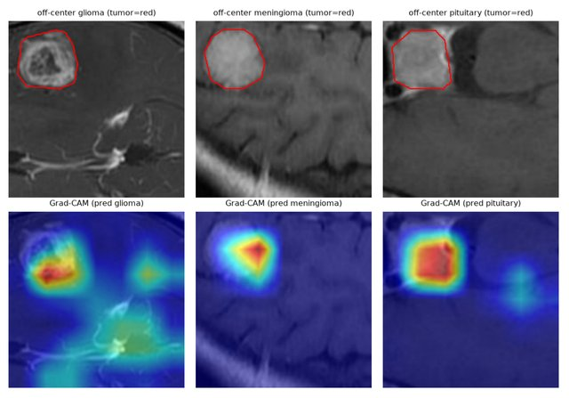

給只修過基礎微積分和統計的讀者：一個準確率 96% 的腦腫瘤分類器，裡面到底學到了什麼，以及我們怎麼檢查它。
這篇用的資料是常見的腦腫瘤 MRI 資料集（Cheng/Figshare）：233 位病人、3,062 張打了顯影劑的 T1 橫切面影像，每張都標了腫瘤的輪廓，分成三類：
| 腫瘤類型 | 張數 | 影像上大致的樣子 |
|---|---|---|
| 神經膠質瘤 glioma | 1,426 | 長在腦組織裡，常往周圍浸潤，邊界不清楚 |
| 腦膜瘤 meningioma | 706 | 長在腦膜上，邊界清楚，常貼著顱骨內側 |
| 腦下垂體瘤 pituitary | 930 | 位置固定在腦下垂體附近，形狀較規則 |
在這個資料集上，深度學習的準確率早就超過 97%。再多 1、2 個百分點，科學和臨床上的意義都很有限。真正的問題變成：模型是靠「看腫瘤」答對的，還是靠別的線索？
所以這篇論文不提出更準的模型，而是提出一套檢查方法（audit，審查），用來看一個已經訓練好的模型內部學到了什麼。它有三個特點：
每位病人平均有十幾張相鄰的切片，彼此幾乎一模一樣。如果隨機把切片分到訓練集和測試集，同一位病人的切片就會兩邊都有。模型等於考前看過考題，分數會被灌水。這叫資料洩漏（data leakage）。
麻煩的是，網路上常用的 Roboflow 版本把病人編號弄丟了。我們回頭用檔名對照原始的 .mat 檔，找回每張切片屬於哪位病人，以及原作者官方的 5-fold 分組。比對結果與官方類別標記的一致率是 99.97%，而且沒有任何病人跨越兩個 fold。
所以全篇的模型訓練與檢查，都使用病人層級的 5-fold 交叉驗證：每次用 4 組病人訓練，在第 5 組上測試，輪流 5 次。
模型是在 ImageNet 上預訓練過的 ResNet-50，全部層都微調。輸入前先把腫瘤周圍裁成 3×3 的框，腫瘤在正中間、四周保留一圈組織。實驗發現只裁腫瘤本身準確率會下降，代表周圍組織也有資訊。
ResNet-50 最後一層分類器之前，會把整張圖壓縮成一個 2,048 維的向量（global average pooling 層的輸出）。可以把它想成模型看完這張圖後寫下的 2,048 個數字的筆記，分類器只根據這份筆記做判斷。這篇檢查的就是這份筆記。
我們做了兩份筆記來比較：
| 特徵 | 來源 | 用途 |
|---|---|---|
| 預訓練特徵 | 只在 ImageNet 學過、沒看過腦腫瘤的 ResNet-50 | 對照組：「還沒學」的樣子 |
| Out-of-fold 特徵 | 微調後的模型，而且每張圖都由「沒看過這位病人」的那個 fold 模型來算 | 檢查主角：「學完」的樣子，而且沒有洩漏 |
這樣訓練出來的模型，5-fold 平均準確率是 96.46 ± 1.39%。同樣的切分下，用 19 個手工 radiomics 特徵加上傳統分類器，最好只有 86.47%，差了大約 10 個百分點。
第一個檢查是看特徵空間的形狀。做法：先用 PCA 把 2,048 維壓到保留 95% 變異量，再用 k-means 分成 3 群（不給它任何標籤），最後看分出來的 3 群跟真正的 3 種腫瘤吻合多少。
吻合程度用 ARI（Adjusted Rand Index）衡量：1 代表分群跟真實類別完全一樣，0 代表跟亂分差不多。
| 特徵空間 | ARI | NMI |
|---|---|---|
| 手工 radiomics（19 個描述子） | 0.256 | — |
| 預訓練 CNN | 0.260 | — |
| 微調後 CNN | 0.904 ± 0.036 | 0.845 ± 0.050 |
有一個有趣的對比：radiomics 特徵在有監督的分類下可以做到 86%，可是不給標籤分群時幾乎分不開（ARI 0.256）。代表在手工特徵的空間裡，「診斷」不是最主要的結構，需要分類器畫出界線才分得出來。微調之後，診斷才變成 CNN 特徵空間裡最主要的結構。
Rand Index 看所有「兩張圖一組」的配對：如果兩張圖在真實類別裡同類、在分群結果裡也同群，或兩邊都不同，就算一致。一致的配對比例就是 RI。但隨便亂分也會有一定比例的一致，所以 ARI 扣掉亂分的期望值再重新縮放：
\[\mathrm{ARI}=\frac{\mathrm{RI}-\mathbb{E}[\mathrm{RI}]}{\max(\mathrm{RI})-\mathbb{E}[\mathrm{RI}]}.\]亂分的期望 ARI 是 0，完全吻合是 1，比亂分還差時可以是負的。
k-means 用歐氏距離。在 2,048 維空間裡，很多維度只是雜訊，會把距離「稀釋」掉。PCA 先找出變異最大的方向，保留 95% 的變異量，讓距離主要反映有意義的差異。每個 fold 的特徵空間是獨立訓練出來的，所以分群在每個 fold 內各做一次，再平均。
第二個檢查問的是：2,048 個數字裡，有沒有哪些跟醫師判讀時會看的影像性質有關？我們用 radiomics（影像組學）描述子當作那些性質的量化版本，分成三類：
| 類別 | 數量 | 量什麼 |
|---|---|---|
| 強度 intensity | 9 | 腫瘤內亮度的平均、分布、偏態等（顯影劑讓腫瘤變亮的程度） |
| 形狀 shape | 6 | 面積、周長、圓度、長寬比等 |
| 紋理 texture | 4 | GLCM 對比度、均勻度等，描述內部是否斑駁 |
原本抽了 38 個，去掉幾乎不變的、以及彼此高度相關（|r| > 0.9）的，剩下 19 個。
怎麼算「對得上」：對 2,048 個維度裡的每一維，跟 19 個描述子各算一次 Spearman 相關係數，取絕對值最大的那個，當作這一維的「對應分數」。然後看有多少比例的維度對應分數超過 0.5，記為 \(\rho_{0.5}\)。
| 描述子類別 | 預訓練 \(\rho_{0.5}\) | 微調後 \(\rho_{0.5}\) | 預訓練中位數 | 微調後中位數 |
|---|---|---|---|---|
| 強度（9） | 0.4% | 19.5% | 0.197 | 0.346 |
| 紋理（4） | 0.9% | 6.3% | 0.184 | 0.309 |
| 形狀（6） | 5.3% | 3.1% | 0.197 | 0.241 |
| 全部（19） | 5.6% | 24.5% | 0.22 | 0.40 |
讀法：微調後，強烈對應到某個描述子的維度從 5.6% 增加到 24.5%，大約 4 倍。而且主角換人了：微調前對應最多的是形狀，微調後變成強度。這跟 MRI 的物理原理一致：打了顯影劑的 T1 影像，腫瘤類型主要靠血腦障壁破壞後的亮度差異來區分。
把兩組數字各自換成排名，再算排名之間的 Pearson 相關。沒有同分時可以寫成
\[\rho=1-\frac{6\sum_{k=1}^{n} d_k^2}{n(n^2-1)},\qquad d_k=\text{第 }k\text{ 張圖在兩邊的排名差}.\]它只在乎「一個變大時另一個是否也變大」，不要求直線關係，對極端值也比較不敏感。
設 \(M_{ij}\) 是第 \(i\) 個 CNN 維度與第 \(j\) 個描述子的 Spearman 相關，對應分數定義為
\[p_i=\max_j\,|M_{ij}|,\qquad \rho_{0.5}=\frac{1}{2048}\,\#\{i: p_i>0.5\}.\]從 19 個裡挑最大的，本身就會讓數字偏高：就算兩邊完全無關，19 個相關係數裡的最大值也不會是 0。所以論文只比較「微調前 vs 微調後」的相對變化，不把 \(p_i\) 當成絕對的效果量。更嚴謹的做法是打亂配對做置換檢定（permutation null），論文把它列為未來工作。
第三個檢查用 Grad-CAM 畫出模型做判斷時「最在意」的區域，再跟醫師標的腫瘤輪廓比。把熱圖在門檻 τ = 0.5 切開，得到注意力區域 A；腫瘤遮罩是 M。三個指標：
但這裡有個陷阱：輸入時腫瘤永遠被放在正中間。一個只會盯著畫面中心的模型，指標也會很好看。下面可以自己試試看：
| IoU | coverage | specificity | |
|---|---|---|---|
| 跟著腫瘤 | |||
| 只看中心 |
所以論文加了三個對照實驗，排除「只是看中心」的可能：
| 對照 | 做法 | 結果 |
|---|---|---|
| 1. 跟沒學過的模型比 | 預訓練與微調模型看完全相同的置中影像，差異只能來自學習 | specificity 0.608 vs 0.176，約 3.5 倍 |
| 2. 跟「中心圓盤」比 | 用一個固定在中心、面積相同的圓盤當作「只看中心」的基準 | 腦膜瘤 0.851 勝過圓盤 0.726：腦膜瘤常偏離中心貼著顱骨，注意力有跟上 |
| 3. 把腫瘤移到角落 | 重新裁切，讓腫瘤落在四個角落之一，不重新訓練 | 準確率仍有 85.6%；注意力中心跟著腫瘤移動（x / y 相關 0.61 / 0.68） |

把注意力再拆成三份：落在腫瘤內、腫瘤周圍一圈（寬度隨腫瘤大小調整）、其他背景，三者加起來是 1。
| 類別 | 腫瘤內 | 周圍 | 背景 | 移到角落後：腫瘤＋周圍 |
|---|---|---|---|---|
| 腦膜瘤 | 0.851 | 0.144 | 0.005 | 0.730 |
| 垂體瘤 | 0.728 | 0.267 | 0.006 | 0.722 |
| 膠質瘤 | 0.409 | 0.428 | 0.163 | 0.444 |
邊界清楚的腦膜瘤和垂體瘤，注意力幾乎都在腫瘤上，移到角落也跟得上。膠質瘤的注意力則有一大半在腫瘤外面，移到角落後只剩 44% 在腫瘤附近。可能的解釋之一是膠質瘤會往周圍浸潤，真正的病灶範圍本來就比標註的輪廓大；但腫瘤大小與位置、標註品質、Grad-CAM 本身解析度不高，也都可能造成這個現象。
取最後一個卷積區塊的特徵圖 \(A^k\)（第 \(k\) 個通道）。對預測類別的分數 \(y^c\) 求梯度，在空間上平均得到每個通道的權重，再加權相加、只留正值：
\[\alpha_k^c=\frac{1}{Z}\sum_{i,j}\frac{\partial y^c}{\partial A^k_{ij}},\qquad L^c=\mathrm{ReLU}\Big(\sum_k\alpha_k^c A^k\Big).\]ResNet-50 最後一層的特徵圖只有 7×7，放大到 224×224 後細節有限，這也是膠質瘤結果不能只用「浸潤」解釋的原因之一。
coverage 和 specificity 分母不同：注意力很大一片時 coverage 高、specificity 低；注意力只點在腫瘤中心一小塊時則相反。IoU 同時懲罰兩種錯誤：
\[\frac{1}{\mathrm{IoU}}=\frac{1}{\text{coverage}}+\frac{1}{\text{specificity}}-1 .\]（由 \(|A\cup M|=|A|+|M|-|A\cap M|\) 兩邊同除以 \(|A\cap M|\) 得到。）
| 檢查 | 問的問題 | 微調前 → 微調後 |
|---|---|---|
| 分類 | 分得準嗎？ | radiomics 86.47% → CNN 96.46% |
| 模組 I | 特徵依診斷分群嗎？ | ARI 0.260 → 0.904 |
| 模組 II | 特徵對得上 radiomics 嗎？ | ρ₀.₅ 5.6% → 24.5% |
| 模組 III | 注意力在腫瘤上嗎？ | specificity 0.176 → 0.608 |
三個檢查從不同角度指向同一件事：微調讓模型的內部表徵變得更有結構、更接近放射科看的影像性質，而且對腦膜瘤和垂體瘤來說，注意力確實落在腫瘤上。但對膠質瘤，準確率高（F1 0.978）卻不代表注意力集中在腫瘤上，這正是只看準確率會漏掉的地方。
論文刻意把結論寫得保守。讀的時候要分清楚「發現」和「證明」：
把限制寫清楚不是示弱，而是讓讀者知道結果可以相信到什麼程度。